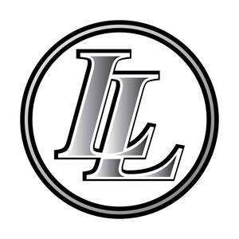

Trade Mark Journal No.2025/027 4 July 2025
UK00004215909 9 June 2025 (18,21,24,25,28)

- Class 18
- Holdalls for sports clothing; Bags for sports clothing; Sport bags; Sports bags; Bags for sports; All purpose sports bags; All purpose sport bags; All-purpose sports bags; Sports packs; Trunks and suitcases; Trunks being luggage; Trunks and travelling bags; Trunks and traveling bags; Ruck sacks; Bags; Duffel bags; Tote bags; Drawstring bags; Luggage, bags, wallets and other carriers; Duffle bags; Toiletry bags; Shoe bags for travel; Shoe bags; Carry-all bags; Multi-purpose purses; Wallets; Handbags, purses and wallets.
- Class 21
- Drinking bottles; Drinks containers; Drinking bottles for sports; Reusable bottles; Sports bottles [empty].
- Class 24
- Towels; Towels of textiles; Beach towels; Towels [textile] for the beach.
- Class 25
- Clothes for sport; Clothing for sports; Sports clothing; Jackets being sports clothing; Clothes for sports; Footwear for sport; Footwear for use in sport; Sports garments; Sports clothing [other than golf gloves]; Sport shirts; Athletic clothing; Sport shoes; Articles of sports clothing; Clothing for cycling; Footwear for sports; Sports footwear; Triathlon clothing; Clothing; Leisure clothing; Clothing for leisure wear; Parts of clothing, footwear and headgear; Boots for sport; Sport coats; Sports jackets; Jerseys [clothing]; Sports shoes; Footwear not for sports; Sports shirts; Sports wear; Sports jerseys and breeches for sports; Clothing for cyclists; Jackets [clothing]; Sport stockings; Athletics footwear; Sports pants; Casual clothing; Sports vests; Sports jerseys; Shorts [clothing]; Sports headgear [other than helmets]; Headbands [clothing]; Headbands for clothing; Boots for sports; Men's clothing; Sportswear; Beach clothing; Rainproof clothing; Windproof clothing; Athletic footwear; Sports bibs; Gloves for apparel; Jackets (Stuff -) [clothing]; Stuff jackets [clothing]; Water-resistant clothing; Waterproof clothing; Clothing for children; Sports socks; Trunks being clothing; Knitted clothing; Sports bras; Belts [clothing]; Belts for clothing; Wristbands [clothing]; Weatherproof clothing; Sports singlets; Leisure footwear; Infant clothing; Baseball caps and hats; Sports caps and hats; Caps; Hats; Caps [headwear]; Caps being headwear; Caps with visors; Beanie hats; Knitted caps; Bobble hats; Baseball caps; Bucket caps; Cap visors; Sports caps; Golf caps; Bucket hats; Beanies; Sun hats; Rugby boots; Rugby shoes; Football boots; Soccer boots; Clothing for gymnastics; Golf clothing, other than gloves; Jackets; Sports over uniforms; Sports shirts with short sleeves; Rugby shirts; Polo shirts; Shirts; Moisture-wicking sports bras; Short-sleeved shirts; Short-sleeve shirts; T-shirts; Long-sleeved shirts; Short-sleeved T-shirts; Rugby jerseys; Tee-shirts; Long sleeve pullovers; Long sleeved vests; Collared shirts; Baby clothes; Clothing for babies; Baby shoes; Baby doll pyjamas; Clothes; Baby bodysuits; Baby bottoms; Plastic baby bibs; Clothing for infants; Baby tops; Infant wear; Cycling tops; Cycling pants; Cycling shorts; Underwear; Briefs [underwear]; Trunks [underwear]; Undergarments; Underwear for women; Underpants; Men's underwear; Women's underwear.
- Class 28
- Sports equipment; Balls for sports; Sports balls; Sport balls; Rugby balls.
Sporting Club Leigh Limited